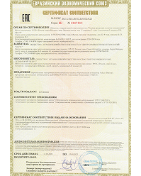
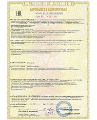
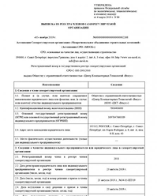

- История компании
- Подразделения
- Собственное производство
- Сервисы
- Лицензии и сертификаты
- Статусы
- Партнеры
- Рейтинги
Лицензии и сертификаты
Сертификат соответствия – документ, подтверждающий соответствие продукции требованиям качества и безопасности, установленными для нее действующими стандартами и правилами.
-

1.9 МбСертификат соответствия на персональные компьютеры VEKUS
Персональные электронные вычислительные машины: Персональный компьютер Vekus "Вектор". Продукция изготовлена в соответствии с ЦДТВ.466219.001ТУ. "Системные блоки серии "VEKUS". Серийный выпуск
актуален до 10.09.2025 года -

427.7 КбСертификат соответствия на производство серверов и систем хранения данных Vekus
Персональные электронные вычислительные машины: серверы торговой марки Vekus "Кварк", системы хранения данных торговой марки Vekus "Гранит". Продукция изготовлена в соответствии с ЦДТВ.466219.019ТУ ("Серверы Vekus "Кварк", системы хранения данных Vekus "Гранит"). Серийный выпуск
Актуален до 17.11.2026 -

Ассоциация СРО "МОСК"
Персональные электронные вычислительные машины: Персональный компьютер Vekus "Вектор". Продукция изготовлена в соответствии с ЦДТВ.466219.001ТУ. "Системные блоки серии "VEKUS". Серийный выпуск
Утверждена приказом Федеральной службы по экологическому, технологическому и атомному надзору от 4 марта 2019 г. N 86